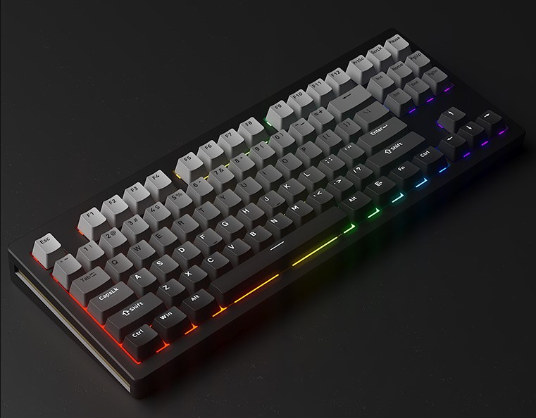

우선 첫째로 커스텀 키보드를 시작하는 이유부터 시작해보죠
많은 기계 분야가 그렇듯, 키보드도 커스텀이 있기 마련이죠.
하지만 커스텀 키보드는 대부분의 사용자에게
생소한 분야임에는 마찬가지일 것입니다.
그러나, 일부 사용자들, 특히 게이머, it 관련 취미가 있으신분
혹은 프로그래머, 영상, 사진 편집자 같은 분들에겐 업무나 취미등에 밀접한 연관이 있는만큼,
이는 피로감, 또는 만족감등에서 큰 차이를 보이죠.
이러한 분이 아니시더라도,
키보드에서만 느껴볼 수 있는 소리의 만족감 또한 커스텀 키보드 분야에 입문하게 되시는 계기로
받아들여질 수 있습니다.
자, 커스텀 키보드가 뭔지 가볍게 알 수 있으셨을겁니다.
그렇다면 바로 다음 내용으로 이어가보죠!
목차의 2번으로 이동해주세요!
